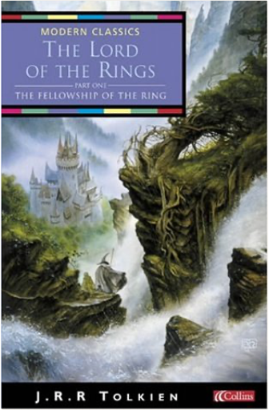

The Lord of the Rings Vol 1: The Fellowship of the RingJ R R Tolkien  In a sleepy village in the Shire, a young hobbit is entrusted with an immense task. He must make a perilous journey across Middle-earth to the Crack of Doom, there to destroy the Ruling Ring of Power - the only thing that prevents the Dark Lord's evil dominion. The Two TowersJ. R. R. Tolkien The Company of the Ring is sundered. Frodo and Sam continue their journey alone down the great River Anduin - alone that is, save for a mysterious creeping figure that follows wherever they go...  The Once and Future King, Complete EditionT H White The Once and Future King, Complete EditionT H White The extraordinary story of a boy called Wart — ignored by everyone except his tutor, Merlin — who goes on to become King Arthur. |
 Made with Delicious Library
Made with Delicious LibrarySpringfield, State zipflap congrotus delicious library Doddridge, Edward